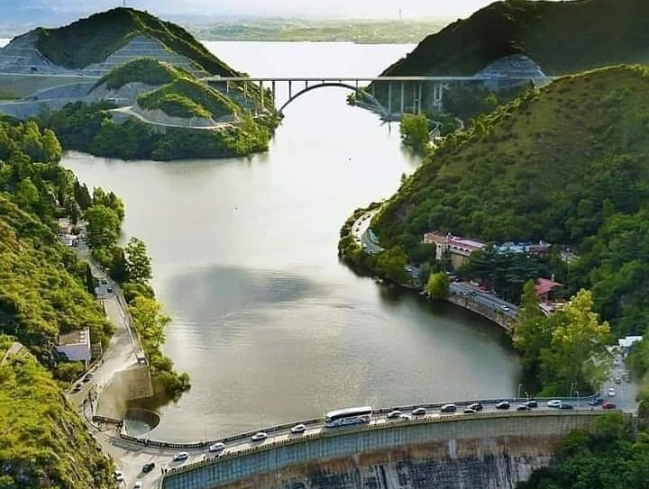

El Dique San Roque
Entre el paisaje y la polémica: pasado, presente y futuro del Dique San Roque
El Dique San Roque, ubicado en el Valle de Punilla, Córdoba, es una de las obras de ingeniería más emblemáticas de Argentina. Inaugurado en 1891, se convirtió en un punto clave para el abastecimiento de agua, la producción de energía y el turismo de la región. Más allá de su belleza paisajística, el dique refleja una historia marcada por avances tecnológicos, problemáticas ambientales y un profundo impacto en la vida social, cultural y económica de las comunidades cordobesas.
En esta página se abordarán los aspectos mencionados anteriormente para conocer este maravilloso lugar al completo. El Dique es, al mismo tiempo, patrimonio y desafío: un lugar donde pasado y futuro se encuentran.